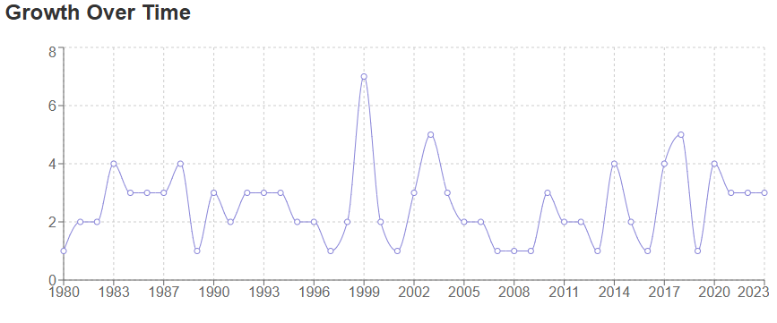
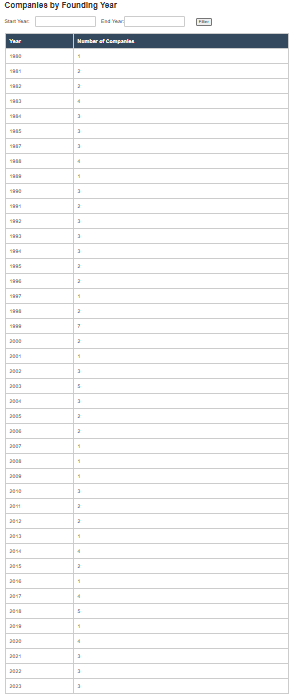
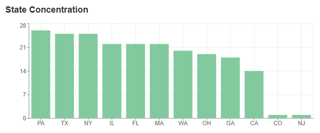
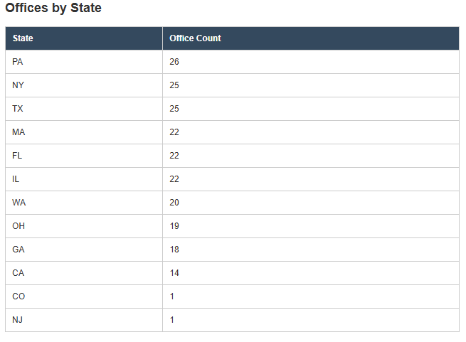

Brief Description:
The Company Offices App is a full-stack web application built using a React frontend and a MongoDB backend. It presents company data by founding year and by state using charts and tables for visual clarity and analysis.
Why I Selected It:
Originally, this artifact was intended to build on code I had written for interacting with a database to display company data. However, I realized that the original project was stored on a remote server I no longer had access to. Rather than abandon the idea, I chose to fully rebuild the entire application from scratch. This required creating a new MongoDB database, designing a backend API to connect to it, and developing a new React-based frontend to present the data.
Enhancements and Skills Demonstrated:
The enhancements involved a complete rebuild and full implementation of both backend and frontend components. I designed and built a RESTful API to communicate with a MongoDB database, structured and seeded company data, and developed a React interface with dynamic charts and tables. I emphasized a clean UI and made sure the app followed logical component structure and routing.
Course Outcomes Met:



